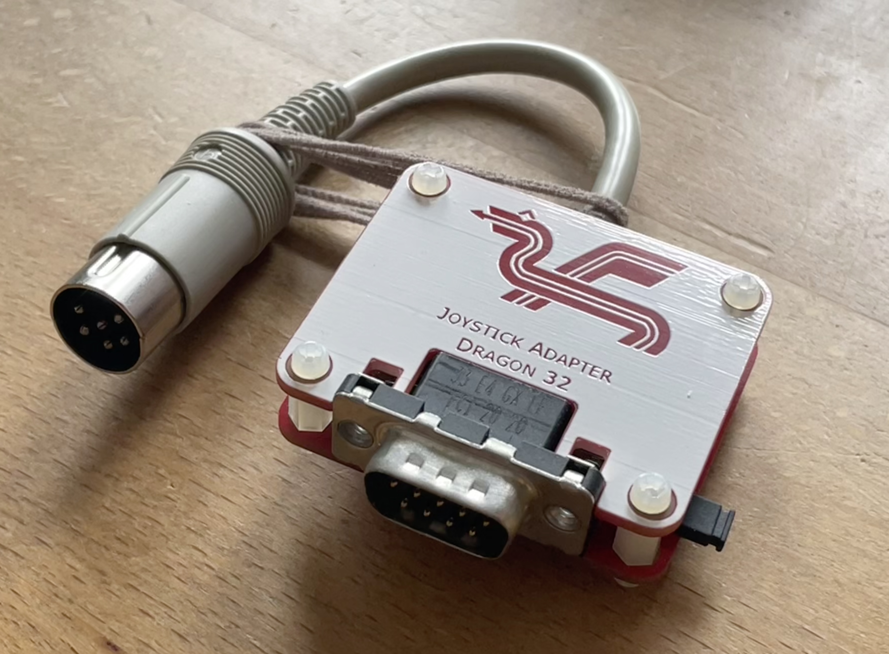
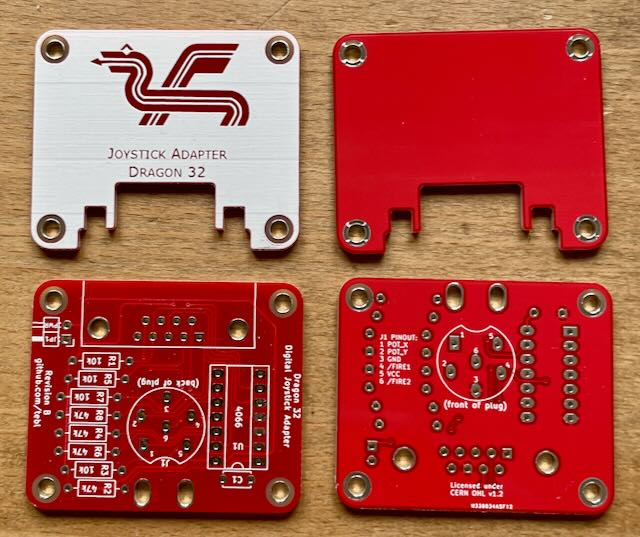

Projekt-Homepage • Interakiver Bestückungsplan

Dieser Adapter erlaubt es, einen Atari/C64 Joystick am Tandy Color Computer oder Dragon 32 zu verwenden.
| Komponente | Anzahl | Preis | Anbieter |
| Platine | 2 | €1.00 | |
| 100nF Kondensator | 1 | €0.03 | Reichelt |
| 10kΩ Widerstand | 4 | €0.02 | Reichelt |
| 47kΩ Widerstand | 4 | €0.04 | Reichelt |
| 90° 1x2 Stiftleiste | 1 | €0.06 | Reichelt |
| Jumper | 1 | €0.03 | Reichelt |
| DIN-6 Stecker | 1 | €0.61 | Reichelt |
| 90° D-Sub-9 Stecker | 1 | €0.36 | Reichelt |
| 6 poliges Kabel, 1m | 0.2 | €0.96 | Reichelt |
| 4066 | 1 | €0.36 | Reichelt |
| 14-Pin Sockel, schmal | 1 | €0.21 | Reichelt |
| nur Platine | €1.00 | ||
| Bausatz | €3.68 |